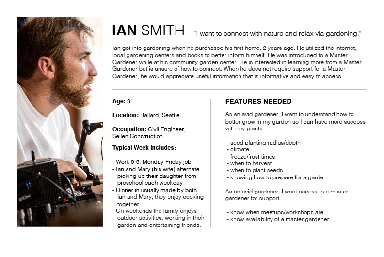
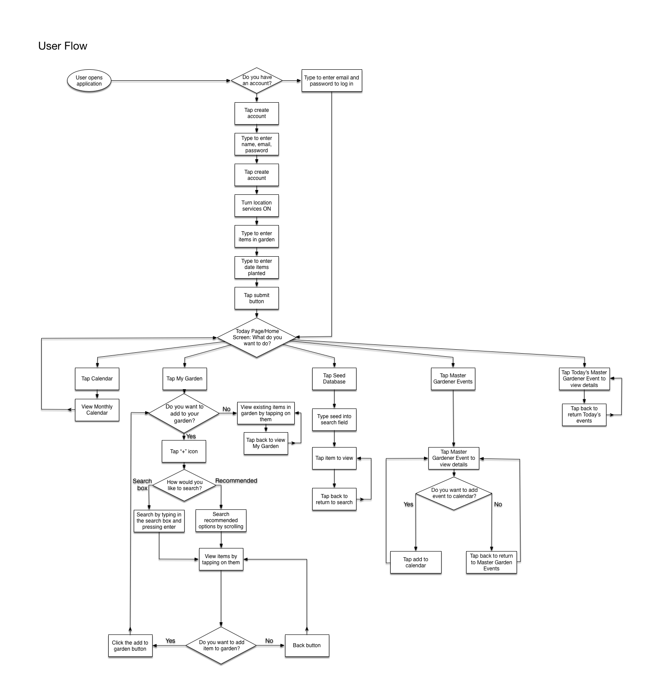

CarMax is trying to drive new users to use their website to find cars. They have found that their current users have dropped and thus want to redesign their information architecuture and site map to accomodate more users.
In this redesign, we propose that CarMax should add more social media integration, as well as offering a new path to desired results. We propose that CarMax design a wizard that will allow users to develop a candidate list of cars. Our persona, a young college student, is able to explore cars and narrow down their list of cars. We also offer social media integration so that they can share their car choices to their friends.
My team didn't know very much about gardening or master gardeners, so we took to the internet to get more information about the community and about different aspects of gardening. We e-mailed several universities and contacted several master gardeners to interview them. We also wanted to understand the basic home gardener's needs and typical behaviours, so we created screener and interview script to get more information about home gardeners. We used this data to create a persona hypothesis.
Our data showed us that master gardeners were typically older people who interacted with the community through holding workshops or events. They also typically preferred seeing plants in person, since they couldn't always accurately identify or diagnose plants through pictures. Our home gardener research also showed that many gardeners were 9-5 professionls. They also tended to view gardening as an escape from reality and the grind, preferring to do so with their family. They also enjoyed harvesting nd planting their vegetables.
To begin our designs, we first developed a user flow and an application map. By doing this we were able to see how a typical user might go through the application and foresee any problems with the process. We also outlined some features that we wanted to make sure we touched upon.
